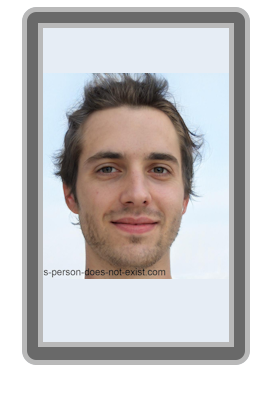
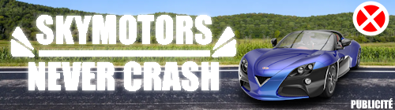

Nestor Babou naît le 26 Mars 2015 en France. Fils de l'entrepreneur et investisseur mondialement connu Jean Babou, Nestor grandit dans un environnement privilégié. Malgré la fortune familiale, il développe très tôt une passion singulière et inattendue : le monde marin, et plus particulièrement les requins, qui lui vaudront l'alias affectueux du Requin Blanc dans son entourage.
Loin de vouloir suivre les traces financières de son père, Nestor choisit une voie radicalement différente, consacrant son énergie à la concrétisation d'un rêve d'enfant : créer le plus grand aquarium du monde.
Nestor consacre les premières années de sa vie adulte à la préparation de son projet. Il étudie la gestion des parcs aquatiques et voyage à travers le monde pour s'inspirer des meilleures institutions marines. En Juin 2035, il fonde officiellement BloupBloup Inc., qui ouvrira ses portes en Octobre 2037 à Columbus, Ohio. Il a déclaré vouloir rester directeur de ce parc pour le reste de sa vie.
Nestor Babou est récemment devenu le père d'Archibald Babou. Son entourage le décrit comme rayonnant, et son fils serait déjà fan de trains selon la famille.
Entre 2043 et 2045, des réunions à caractère conspirationniste auraient eu lieu dans les locaux de BloupBloup Inc. selon les accusations portées par Enki Stoku, gardien du batiment.
Nestor Babou n'a fait aucune déclaration à ce sujet. Ces allégations, relayées sur RubyChop notamment, sont à prendre avec précaution.
